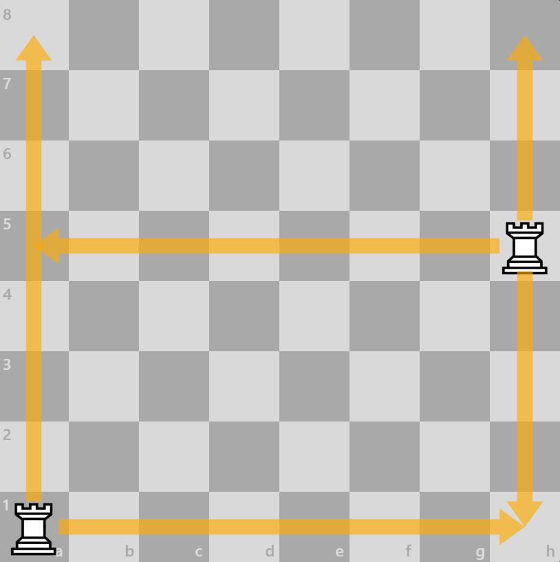
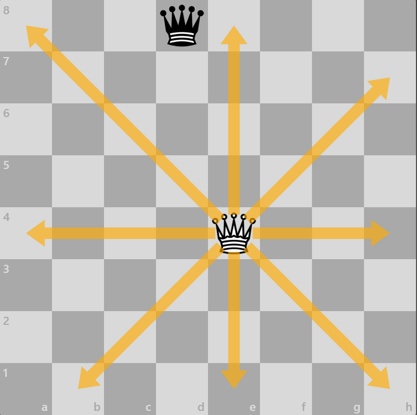
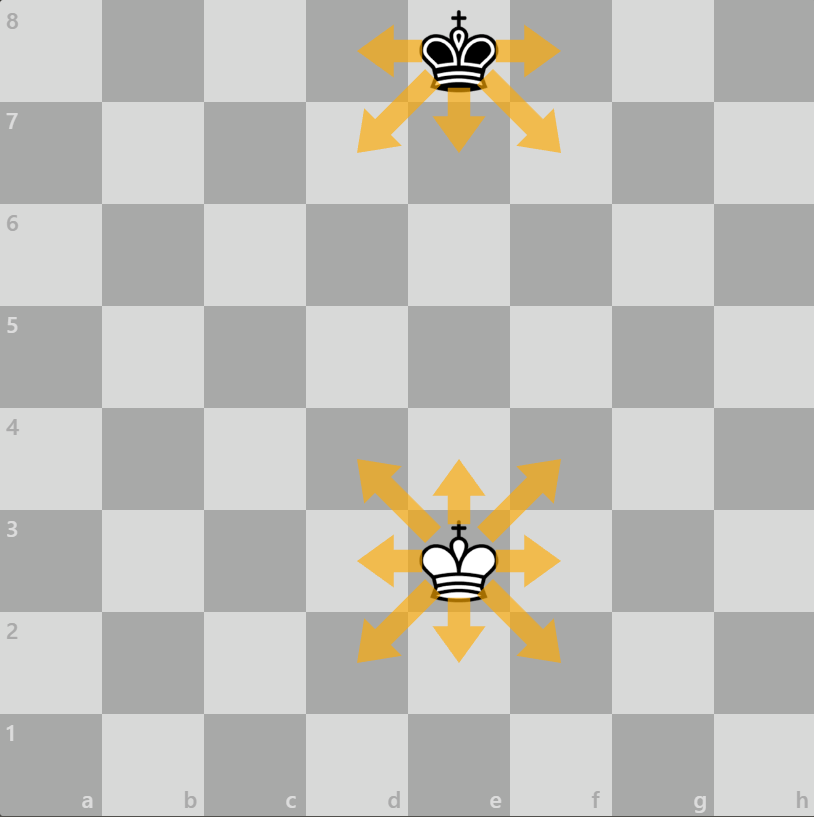
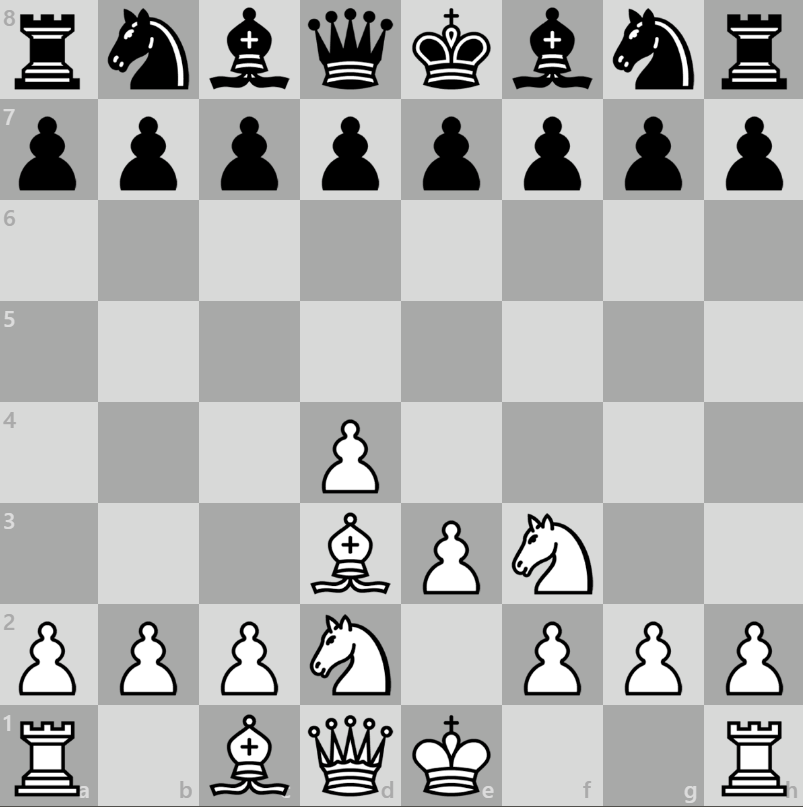
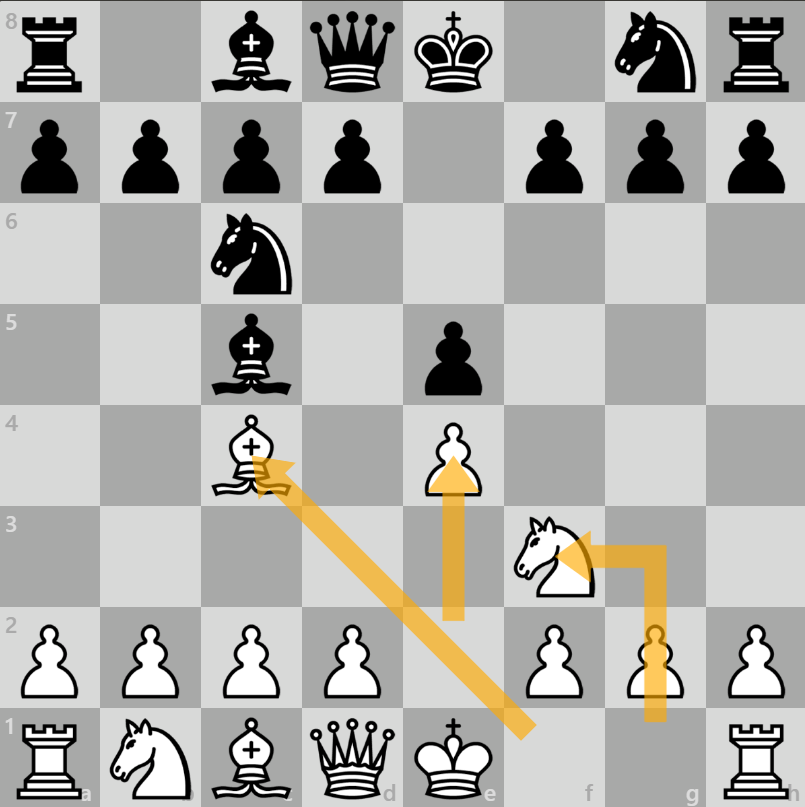
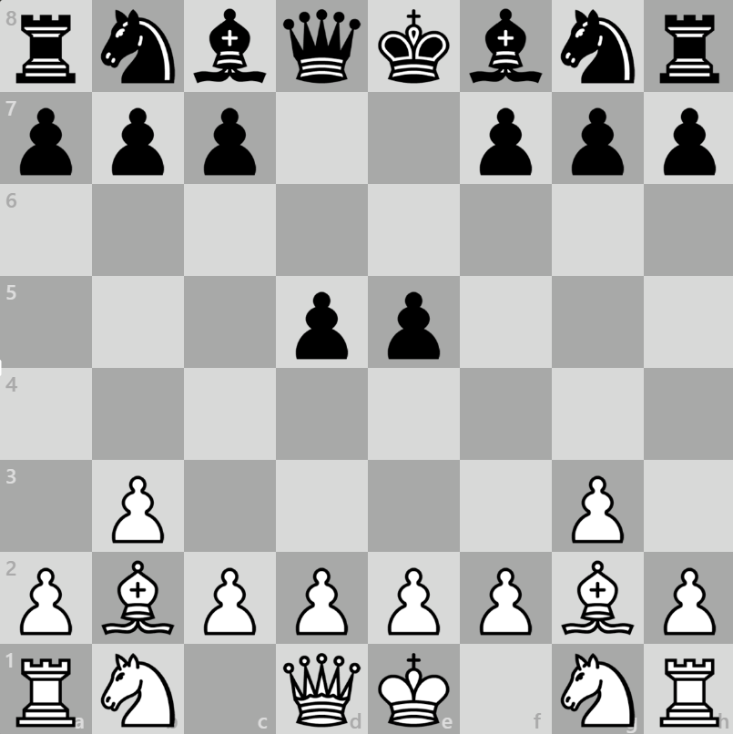
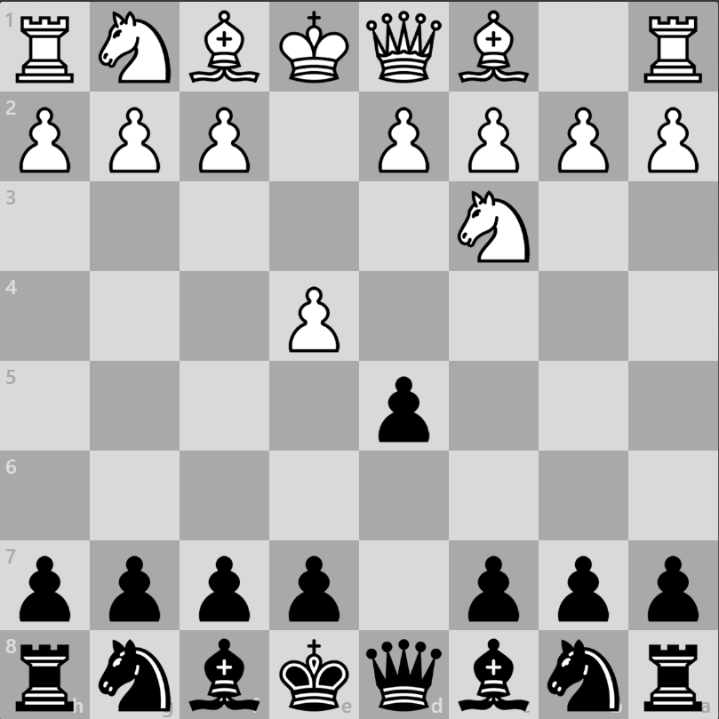
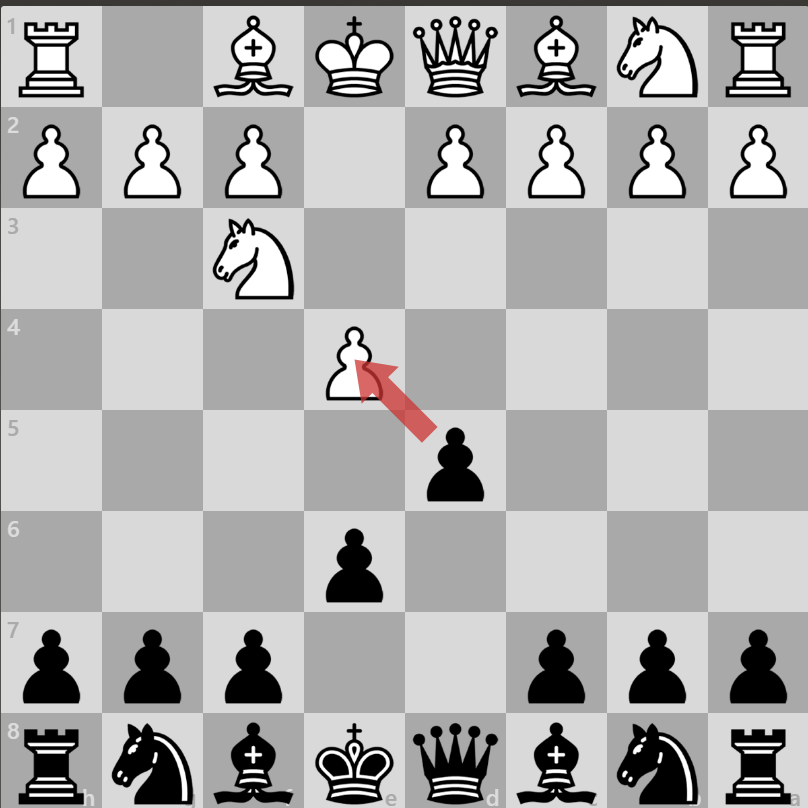
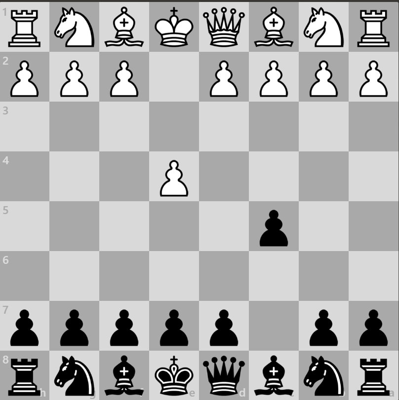

.png)
Movimientos
Peón

El peón se mueve de una casilla en una, solo hacia delante. Para comer a otra pieza siempre come en diagonal una casilla
Alfil

El alfil se mueve en diagonal todas las casillas posibles, siempre se mueve por casillas del mismo color
Caballo

Se mueve en forma de L, dos casillas rectas y una hacia un lado, es la unica pieza que puede saltar otras al moverse
Torre
El peón se mueve de una casilla en una, solo hacia delante. Para comer a otra pieza siempre come en diagonal una casilla
Dama o Reina
El alfil se mueve en diagonal todas las casillas posibles, siempre se mueve por casillas del mismo color
Rey
Se mueve en forma de L, dos casillas rectas y una hacia un lado, es la unica pieza que puede saltar otras al moverse
Aperturas
Sistema Londres
Apertura clásica pero con muchas trampas para ganar la partida
Apertura italiana
Sistema de defensa clasico con muchas opciones y muy seguro
Fianchetto
Prioriza la mejor posicion de los alfiles sacrificando el control del centro del tablero
Defensas
Defensa Escandinava
Puede conseguir tener una dama en el centro pronto y asi poder sacar mas ventaja al principio
Defensa Francesa
Asegura el control del centro y la estructura de peones
Siciliana
Estrctura de peones impoluta y cambio de un peon de semicentro por uno central, con grandes trampas y facilidades
Movimientos especiales
Enorrque corto

Aseguramos el rey, escondido en la esquina del tablero
Enrroque largo

Aseguramos el rey, en el centro del tablero